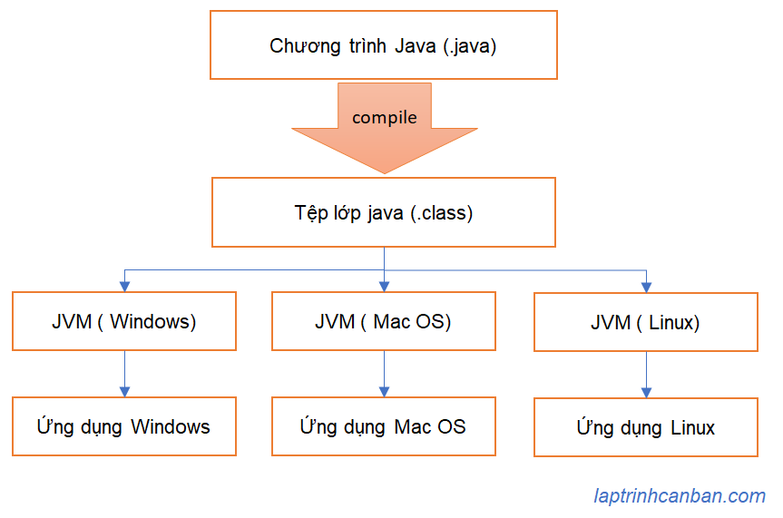
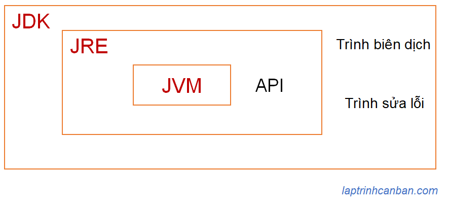

Khi bắt đầu học về Java, chúng ta sẽ bắt gặp một số thuật ngữ khá là giống nhau như Java SE, JDK, JRE và JVM. Bài viết sau đây sẽ hướng dẫn chi tiết về từng thuật ngữ trên để giúp các bạn mới học Java không bị lẫn lộn giữa các khái niệm này.
Java SE là gì
Java SE được viết tắt bởi cụm từ Java Platform, Standard Edition, là một nền tảng tổng hợp cung cấp các API, các kiến trúc chuẩn, các thư viện lớp và các công cụ cốt lõi nhất để xây các ứng dụng Java.
API ở đây được viết tắt bởi cụm từ Application Programming Interface, có ý nghĩa là giao diện lập trình ứng dụng giúp các bộ phận trong một phần mềm máy tính có thể giao tiếp với nhau theo một quy chuẩn.
Với Java thì chúng ta có thể hiểu API trong Java chính là quy chuẩn để có thể sử dụng các hàm và dữ liệu trong chương trình.
Có rất nhiều API được cung cấp bởi Java, trong đó các API cơ bản nhất đều được tập hợp bên trong Java SE, ví dụ như là class java.lang.String chẳng hạn.
Java SE thường được cập nhật phiên bản theo một định kỳ, và để dễ phân biệt thì tên phiên bản sẽ được đính kèm mã số với cụm từ Java SE, ví dụ như Java SE 8 hay Java SE 12 chẳng hạn.
Sự khác nhau giữa Java SE, Java EE và Java ME
Trong Java SE tập hợp các API cơ bản nhất của Java, và trong nhiều trường hợp thì chúng ta chỉ cần nền tảng tổng hợp này là đủ để viết một chương trình thông thường ứng dụng máy tính để bàn chẳng hạn.
Tuy nhiên để phát triển các ứng dụng có quy mô lớn hơn như hệ thống công ty chẳng hạn thì một mình Java SE là chưa đủ. Khi đó chúng ta cần phải kết hợp thêm một nền tảng tổng hợp khác chính là Java EE.
Java EE được viết tắt bởi cụm từ Java Platform, Enterprise Edition là một phần mở rộng của Java SE cung cấp các API cần thiết để xây dựng các ứng dụng hoặc hệ thống có quy mô lớn bằng ngôn ngữ Java.
Vào năm 2017 thì Java EE đã được chuyển từ Oracle sang Eclipse Foundation và từ đó thì nó đã được đổi tên từ Java EE thành Jakarta EE.
Tương tự như Java EE thì Java ME cũng là là một tập hợp các API được sử dụng để phát triển các ứng dụng chạy trên các thiết bị nhúng như thiết bị gia dụng và thiết bị di động. Java ME là tên viết tắt của Java Platform, Micro Edition.
Lưu ý do Java EE và Java ME đều là phần mở rộng của Java SE, nên chúng ta cần phải sử dụng chúng đồng thời với Java SE khi phát triển dự án.
JVM là gì
JVM là tên viết tắt của Java Virtual Machine, là một ứng dụng cần thiết giúp chạy các chương trình viết bởi Java trên mọi hệ điều hành khác nhau như Windows hay Mac Os. JVM còn được gọi là Máy ảo Java.
Lấy ví dụ với ngôn ngữ C chẳng hạn, tùy thuộc vào hệ điều hành mà bạn cần phải biên dịch mã C sang file thực thi có thể chạy trên từng hệ điều hành đó. Ví dụ như với Windows thì biên dịch mã nguồn C sẽ tạo ra file exe chẳng hạn, và file exe này có khả năng tự thực thi độc lập khi bạn mở nó.
Tuy nhiên khi biên dịch mã nguồn chương trình Java thì không phải là file thực thi, mà là một mã nguồn trung gian được gọi là Tệp lớp Java (Java class file) chứa mã byte Java có thể được thực thi trên Máy ảo Java, và tệp lớp Java này đều giống nhau dù bạn biên dịch tại bất kỳ hệ điều hành nào.
Mã nguồn trung gian này không thể tự thực thi, mà nó cần được chạy trên môi trường tạo bởi máy ảo Java phù hợp với từng hệ điều hành khác nhau. Do mã nguồn trung gian này là giống nhau, nên chúng có thể hoạt động trên bất kỳ hệ điều hành nào, miễn là máy ảo Java phù hợp với hệ điều hành đó được cài đặt.

JRE là gì
JRE là tên viết tắt của Java Runtime Environment, là một tập hợp cung cấp tất cả các nguồn lực cần thiết để có thể chạy một chương trình Java. JRE còn được gọi là Môi trường thời gian chạy Java, và JRE bao gồm JVM mà Kiyoshi đã giới thiệu ở trên, cũng như các API khác trong nó.
Các ứng dụng được viết bằng Java cần chạy trên JVM, nhưng do trong JRE cũng chứa JVM nên thực tế bạn chỉ cần cài đặt JRE là có thể xây dựng được môi trường chạy ứng dụng Java rồi. JRE được đánh số theo phiên bản Java SE tương ứng. Ví dụ với Java SE 8 thì chúng ta cũng có JRE 8 tương ứng chẳng hạn.
Lại nữa, trước đây chúng ta có thể cài đặt JRE một mình, nhưng kể từ tháng 12 năm 2019, JRE không được phân phối riêng lẻ nữa và chúng ta sẽ cần cài đặt nó thông qua JDK mà được giới thiệu sau đây.
JDK là gì
JDK là tên viết tắt của Java Development Kit, là một tập hợp các ứng dụng để phát triển và thực thi các chương trình Java.
JDK còn được gọi là bộ công cụ phát triển phần mềm Java, nó bao gồm các công cụ phát triển phần mềm như là JRE cũng như các trình biên dịch hay gỡ lỗi khác, trong một gói duy nhất có thể cài đặt.
Nói cách khác, chỉ cần cài đặt JDK là chúng ta có thể sử dụng cả JRE và JVM để có thể phát triển các ứng dụng Java rồi.
JDK được đánh số phiên bản theo phiên bản Java SE tương ứng. Ví dụ với Java SE 8 thì chúng ta cũng có JDK 8 tương ứng chẳng hạn.
Sự khác nhau giữa Java SE, JDK, JRE và JVM
Tổng hợp lại thì chúng ta có mối quan hệ cũng như sự khác nhau giữa Java SE, JDK, JRE và JVM như sau:
Java SE là một nền tảng tổng hợp cung cấp các API, các kiến trúc chuẩn, các thư viện lớp và các công cụ cốt lõi nhất để xây các ứng dụng Java
JDK, JRE và JVM là ba gói công nghệ cốt lõi được sử dụng trong lập trình Java, trong đó JVM tạo máy ảo Java giúp chạy code Java trên mọi hệ điều hành, JRE cung cấp môi trường bao gồm tất cả các nguồn lực cần thiết để chạy Java, và JDK là bộ công cụ phát triển phần mềm Java bao gồm cả JRE, JVM và các API khác.
Chúng ta có thể khái lược quan hệ giữa chúng như sau:

Sử dụng Java có mất phí không?
Như Kiyoshi đã phân tích ở trên, để có thể phát triển phần mềm bằng Java thì chúng ta cần phải cài đặt JDK.
Thời gian trước đây thì JDK được phát hành bởi công ty Oracle, tuy nhiên từ sau tháng 4 năm 2019 thì công ty này đã thay đổi license với những điều khoản sử dụng có phí và mất phí. Theo đó thì các hoạt động sử dụng Java cho mục đích thương mại sẽ đều bị tính phí sử dụng.
Tuy nhiên với người dùng cá nhân với mục đích học tập, nghiên cứu chẳng hạn thì sẽ không bị mất phí khi sử dụng Oracle JDK.
Mặc dù vậy, với người dùng cá nhân sẽ không được hỗ trợ nữa, và cần phải update 6 tháng 1 lần khi sử dụng Oracle JDK.
Tuy vậy, với các doanh nghiệp cần sử dụng Java cho mục đích thương mại, thì không phải là đã hết cách sử dụng Java miễn phí.
Hiện tại, công ty Oracle ngoài việc phát hành Oracle JDK thì còn liên kết với các cá nhân hay công ty khác như SAP, Red Hat hay Google để tạo ra phiên bản mở OpenJDK. Với việc sử dụng OpenJDK thì chúng ta cũng có thể dùng Java cho mục đích thương mại miễn phí.
Tuy nhiên điểm cần lưu ý là với bản miễn phí này thì chũng ta cũng cần phải update theo định kỳ 6 tháng 1 lần, và mỗi lần đều là các phiên bản khác nhau, trong khi với bản có phí Oracle JDK thì sẽ được hỗ trợ tới tận 3 năm với cùng một phiên bản.
Việc chọn lựa giữa bản miễn phí nhưng phải update liên tục, hay là bản có phí nhưng được hỗ trợ lâu dài là bài toán của doanh nghiệp, tuy nhiên với các bạn đang theo dõi trang web laptrinhcanban.com thì Kiyoshi nghĩ là chúng ta là người dùng cá nhân và chỉ cần tới bản miễn phí OpenJDK là đủ rồi. Và trong chuyên để lập trình java cơ bản này thì Kiyoshi cũng lựa chọn OpenJDK để hướng dẫn học Java cho mọi người.
Tổng kết
Trên đây Kiyoshi đã hướng dẫn bạn về Sự khác nhau giữa Java SE, JDK, JRE và JVM rồi. Để nắm rõ nội dung bài học hơn, bạn hãy thực hành viết lại các ví dụ của ngày hôm nay nhé.
Và hãy cùng tìm hiểu những kiến thức sâu hơn về Java trong các bài học tiếp theo.
URL Link
HOME › java cơ bản cho người mới bắt đầu>>01. giới thiệu ngôn ngữ java